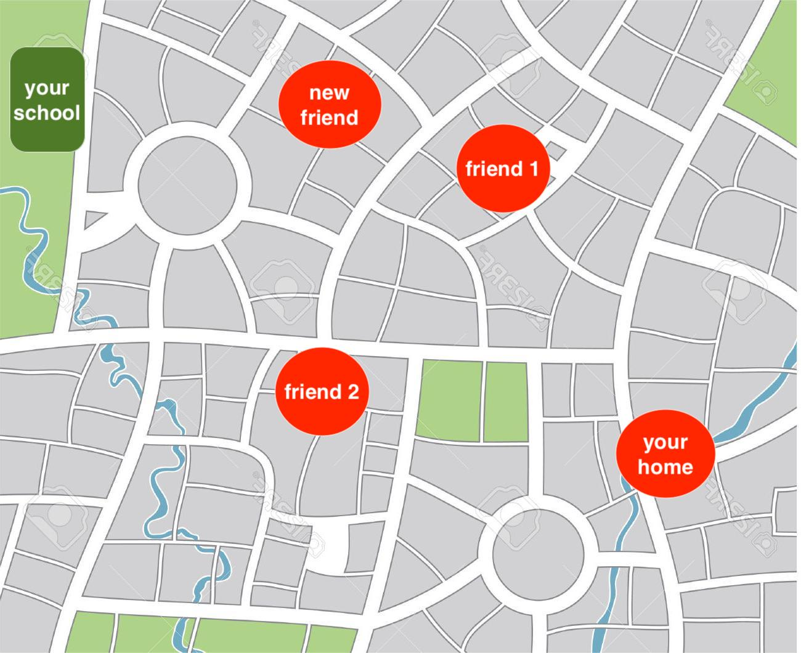

Problem Solving
Grey overlay
Pink
Green
Blue
Cream
Liliac
Purple
Yellow
1 Objectives
Developing Information Technology learning strand, specifically:
- Collects, organises and presents data and information in digital content.
- Makes judgements about digital contentwhen evaluating and repurposing it for a given audience.
- Recognises the audience when designing and creating digital conten
2 Problems and Problem Solving
Problem solving
- You have been solving problems all your life, from obvious problems such as puzzle games, like the Tower of Hanoi, to going through your every day life. As you mature, you are getting better at it.

By André Karwath aka Aka - Own work, CC BY-SA 2.5
- Lets work through some problems and see how you solve them.
Problem 1: You have been asked by your teacher to rank the quiz score in your form for each of the 8 teams from the highest to the lowest. How do you do it?
- Try to describe the steps you used to the person next to you.
- Is your solution more efficient than your peers?
Problem 2: You have walked to your school along the same route for months with your two of your best friend. You meet them up along the way. But you have just made another friend and you want to meet him along the way. You need to adjust your route so that you don't have to walk unneccessary distance. See the map below.

- Can you describe the steps and reasons you followed to reach your solution for the above problem to the person next to you?
- Think how complex the problem would be if you have to meet up with more friends on your way to school.
- How parcel delivery companies plan their delivery routes?
3 Computational Thinking
Learn It
- As a human, you find that sorting the scores from 8 teams is quite easy.
- But what about sorting the whole year's? the whole school's? You can, but it will take you a much longer time.
- You may be already thinking about computers and using spreadsheet to help you sort a much longer list of scores.
- But humans must create spreadsheet software first. What's more the spreadsheet software humans created must be able to sort numbers.
- When we deal with large amount of data and more complex problems, computers can help us to solve those problems more quickly than humans can, BUT humans must describe the steps to solve the problems to the computers first.
- Computational thinking is the thought processes of understanding a problem and presenting its solution(s) in such a way that a computer can effectively carry out.
Key Points Check
- Humans must develop possible solutions
- Humans must present the solutions in a way computers can understand
- Computers can only help us solve problems
Computational thinkingis the thought processes of understanding a problem and presenting its solution(s) in such a way that a computer can follow and carry out the solution
Badge It
Learning strand: Information Technology
- Read this article. Use your own words, one paragraph each, list 4 things you have learned from the article on computational thinking.